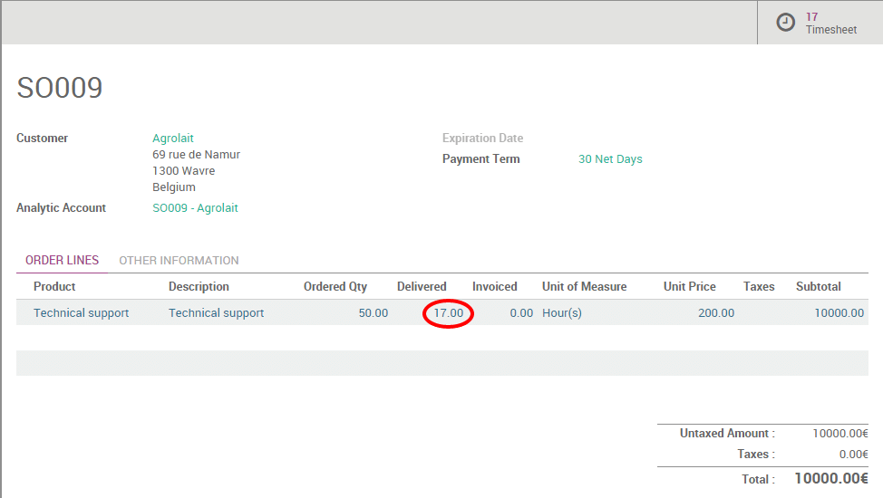

Существуют различные виды продажи услуг: предоплаченный объем часов/дней (например, контракт на поддержку), выставление счетов по затраченному времени и материалам (например, затраченное время на консультации) или с фиксированной ценой по договору (например, создание сайта).
В этом разделе мы рассмотрим, как продавать и отслеживать предоплаченный договор на поддержку.
Например, вы можете продать пакет «50 часов» поддержки за $25000. Цена фиксируется и берется авансом. Вам необходимо отслеживать время поддержки, которую вы потратили при выполнении условий договора.
Настройка
Установите приложения Продажи (Sales) and Табели (Timesheet)
Чтобы продавать услуги, вам необходимо установить приложение Продажи (Sales) в модуле Приложения (Apps). Также установите приложение Табели (Timesheets), если вы хотите отслеживать время поддержки, которое вы затратили по каждому договору.


Создание продуктов
По умолчанию продукты продаются поштучно. Чтобы продавать услуги в час, вы должны разрешить использование нескольких единиц измерения. В приложении Продажи (Sales) перейдите в меню . На этом экране разрешите использовать несколько единиц измерения для продукта (опция Единицы измерения (Unit of Measures)).

Чтобы продать контракт на поддержку, вы должны создать продукт для каждого из них. В приложении Продажи (Sales) используйте меню , создайте новый продукт со следующими параметрами:
Название: Техническая поддержка
Тип продукта: Услуга
Единица измерения: Часы
Порядок выставления счетов: заказываемые количества, так как услуга поставляется по предоплате. Мы будем выставлять счет за услугу на основании заказанного товара, а не исходя из доставленного количества.
Отслеживание выполнения (Track Service): расписание по контрактам (Timesheet on contracts). Аналитический счет будет автоматически создан для каждого заказа, содержащего эту услугу, чтобы вы могли отслеживать часы в соответствующем счете.

Совет
Существуют различные способы отслеживания обслуживания, связанного с заказом клиента или проданным продуктом. В приведенной выше конфигурации вы можете продавать только один контракт поддержки на заказ. Если ваш клиент заказывает несколько контрактов на обслуживание в расписании, вам придется разделить котировку на несколько заказов.
Обратите внимание, что вы можете продавать в разных единицах измерения, например: дни, пакет 40 часов и т.д. Для этого просто создайте новую единицу измерения в категории Единица измерения и установите коэффициент конверсии по сравнению с часами (пример: 1 день = 8 часов).
Отслеживание договора на поддержку
Котировки и заказы на продажу
После создания продукта вы можете создать предложение или заказ на продажу связанного с продуктом. Как только котировка будет подтверждена и преобразована в заказ клиента, ваши пользователи смогут записывать службы, связанные с этим контрактом на поддержку, с помощью приложения расписания.
Табели (Timesheets)
Чтобы отслеживать обслуживание, которое вы выполняете по конкретному договору, вы должны использовать приложение Табели (Timesheet). Аналитическая учетная запись, связанная с заказом на продажу, была автоматически создана («SO009 - Agrolait`` на снимке экрана выше), поэтому вы можете начать отслеживать оказанные услуги сразу после оплаты.
Контроль предоставленной поддержки по заказу клиента
В приложении Продажи (Sales) в меню можно контролировать ход каждого заказа. В строке заказа клиента, относящейся к договору поддержки видно Доставлено, которые обновляются автоматически, в зависимости от количества оказанных услуг из приложения Табели (Timesheet).
Переработка и продление
Если количество часов, которое вы предоставили в контракте на поддержку, больше или равно количеству часов, которые клиент купил, вам предлагается продать дополнительный контракт клиенту, поскольку они использовали всю свою квоту на обслуживание. Периодически (желательно один раз в две недели) вы должны проверить заказ клиента, который находится в таком случае. Для этого перейдите к: menuselection: [UNKNOWN NODE title_reference].
Совет
Если вы используете Odoo CRM, хорошей практикой является создание возможности для каждого заказа на продажу в статусе выставления счета-фактуры, чтобы вы могли легко отслеживать свои достижения по увеличению продаж.
Если вы продаете дополнительный контракт на поддержку, вы можете либо добавить новую строку в существующий заказ на продажу (таким образом, вы продолжаете размещать заказ в том же самом расписании), либо создать новый заказ (таким образом, люди будут размещать в расписании свои часы по новому контракту) , Чтобы отменить заказ клиента как ** Upselling [UNKNOWN NODE problematic], вы можете установить заказ клиента как готовый, и он исчезнет из вашего списка.
Специальная конфигурация
При создании формы продукта вы можете установить другой подход для отслеживания сервиса:
** Создание задания и отслеживаниемчасов [UNKNOWN NODE problematic]: в этом режиме создается задача для каждой строки заказа клиента. Затем, когда вы делаете расписание, вы не записываете часы по заказу / контракту на продажу, но записываете часы на задание (которое представляет собой контракт). Преимущество этого решения заключается в том, что он позволяет продавать несколько контрактов на обслуживание в рамках одного и того же заказа клиента.
** Вручную [UNKNOWN NODE problematic]: вы можете использовать этот режим, если вы не записываете расписания в Odoo. Количество часов, с которыми вы работали в конкретном контракте, можно записывать вручную в строке заказа клиента непосредственно в поле доставленного количества.
См.также
: Документ: [UNKNOWN NODE title_reference]